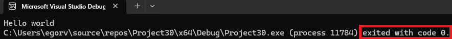
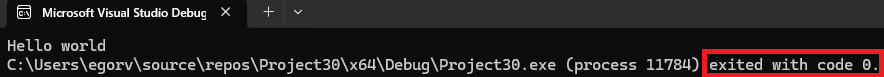

Со средой разработки мы разобрались, поэтому можем приступать к
нашей первой программе на Си.
Давай сразу напишем наш Hello world и разберем
далее, что тут написано. Не стоит пугаться, если большинство вещей
здесь тебе не понятны, они будут разобраны далее в следующих
статьях.
#include <stdio.h>: #include - это директива препроцессора(здесь грубо говоря она вставляет код нашей библиотеки, которую мы указали). stdio.h - это стандартная библиотека ввода-вывода, в которой как раз и содержится наша функция printf.
int main() {}: эта функция по сути является стартом нашей программы. То, что находится в фигурных скобках называется телом функции. На данный момент, можно думать так: мы видим результат команд, которые мы пишем в теле main. Также мы видим, что перед названием функции("main") стоит "int", это тип значния, которое вернет функция, на данном этапе можно не вникать в это, типы данных и функции будут разобраны в следующих статьях.
printf("Hello world"): начнем с того, что "Hello world" - это строка, как таковые строки в си не реализованы, и по сути это просто массив символов(char). Мы сразу передаем её в функцию printf( ). printf выводит нам в командную строку текст, который мы ей передали.
return 0;: эта команда, возвращает 0, если программа вернула 0, то это значит, что она завершила свою работу без ошибок.

C
#include <stdio.h>
int main() {
printf("Hello world");
return 0;
}#include <stdio.h>: #include - это директива препроцессора(здесь грубо говоря она вставляет код нашей библиотеки, которую мы указали). stdio.h - это стандартная библиотека ввода-вывода, в которой как раз и содержится наша функция printf.
int main() {}: эта функция по сути является стартом нашей программы. То, что находится в фигурных скобках называется телом функции. На данный момент, можно думать так: мы видим результат команд, которые мы пишем в теле main. Также мы видим, что перед названием функции("main") стоит "int", это тип значния, которое вернет функция, на данном этапе можно не вникать в это, типы данных и функции будут разобраны в следующих статьях.
printf("Hello world"): начнем с того, что "Hello world" - это строка, как таковые строки в си не реализованы, и по сути это просто массив символов(char). Мы сразу передаем её в функцию printf( ). printf выводит нам в командную строку текст, который мы ей передали.
return 0;: эта команда, возвращает 0, если программа вернула 0, то это значит, что она завершила свою работу без ошибок.
